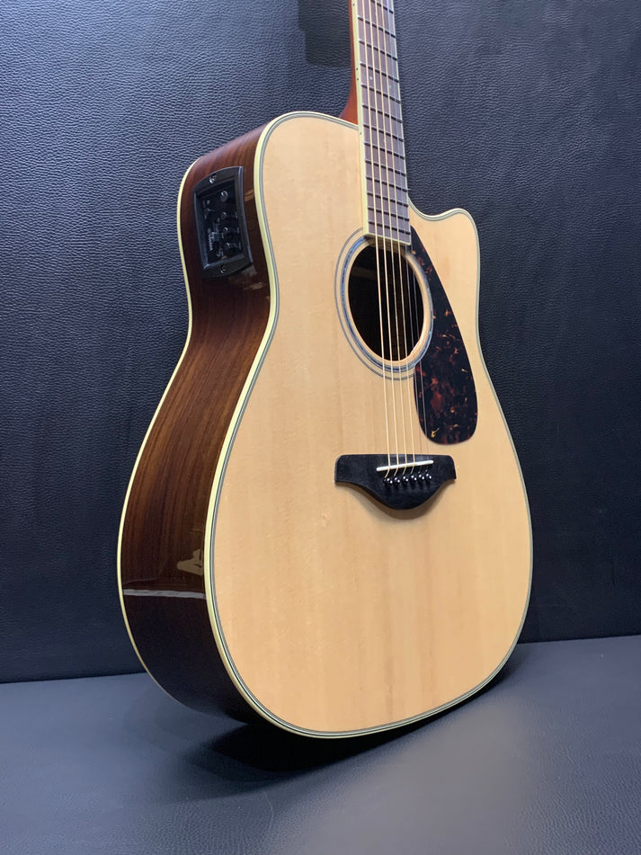

I took a guitar class in junior high, and despite enjoying the class, I never followed through with the instrument. That was until I was in Puerto Rico, where the Guitar is very popular. Since returning from the island, I have been learning a lot and haven’t stopped playing since.
